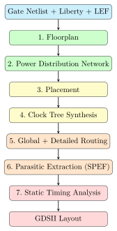
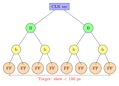

Chapter 9: Physical Design¶
Physical design turns the gate netlist produced by synthesis into an exact physical layout: where each cell sits on silicon, which metal layer connects them, and how the clock reaches every flip-flop at exactly the right moment.
Analogy: Physical Design as Urban Planning
The gate netlist is like a list of buildings and roads in a city. Physical design is the city planner’s job: decide where every building goes (placement), lay out the road network (routing), ensure power reaches every building (PDN), and synchronise all traffic lights (clock tree synthesis).
9.1 The Physical Design Flow¶

9.2 OpenROAD — The Open-Source Physical Design Suite¶
OpenROAD is a complete, open-source RTL-to-GDSII physical design tool maintained by UC San Diego and a community of contributors. It is the engine inside OpenLane (the automated flow from Efabless).
The complete flow script is at eda/openroad/full_flow.tcl.
9.2.1 Step 1: Floorplan¶
The floorplan defines the die boundary (the chip outline) and the core area (where cells can be placed), and places I/O pins around the edge.
# Option A: Fixed die size (500 um x 500 um, 10 um core margin)
initialize_floorplan \
-die_area {0 0 500 500} \
-core_area {10 10 490 490} \
-site sky130_fd_sc_hd__unit
# Option B: Auto-size from target utilisation
initialize_floorplan \
-utilization 0.45 \ # Fill 45
-aspect_ratio 1.0 \ # Square chip
-core_space 10 \ # 10 um margin to die edge
-site sky130_fd_sc_hd__unit
# Place I/O pins randomly (for initial testing)
place_pins -hor_layers {met2} -ver_layers {met3} -random
Choosing Target Utilisation
-
30–45%: Easy routing, good timing. Large chip.
-
45–60%: Balanced (recommended starting point).
-
60–75%: Tight routing. Routing DRC violations common.
-
>75%: Typically unroutable. Reduce utilisation.
9.2.2 Step 2: Power Distribution Network (PDN)¶
Every cell needs a stable power supply. The PDN consists of:
-
Power rings: thick metal rings around the core boundary.
-
Power stripes: regular metal tracks crossing the core.
-
Standard cell rails: horizontal VDD/VSS rails in MET1 connecting directly to cell power pins.
# Define the power domain
set_voltage_domain -name CORE -power VDD -ground VSS
# Create the PDN grid template
define_pdn_grid -name main_grid \
-voltage_domains CORE -starts_with POWER
# Ring around core: 3 um wide on MET4 and MET5
add_pdn_ring -grid main_grid \
-layers {met4 met5} \
-widths {3.0 3.0} \
-spacings {2.0 2.0}
# Internal horizontal stripes on MET4 every 50 um
add_pdn_stripe -grid main_grid \
-layer met4 -width 1.6 -pitch 50.0 -offset 5
# Internal vertical stripes on MET5 every 50 um
add_pdn_stripe -grid main_grid \
-layer met5 -width 1.6 -pitch 50.0 -offset 5
# Connect MET4 stripes to MET5 stripes via VIA4
add_pdn_connect -grid main_grid -layers {met4 met5}
# Generate the PDN (creates actual geometry)
pdngen
9.2.3 Step 3: Placement¶
The placer assigns each cell a legal position on the placement grid. It minimises wirelength (shorter wires = less delay, less power).
# Global placement: approximate positions
global_placement \
-density 0.55 \ # Target cell density
-pad_left 2 \ # Padding at core boundary
-pad_right 2
# Detailed placement: legalise all overlaps
detailed_placement
check_placement -verbose # Report any violations
# Estimate wire parasitics (needed for timing-driven optimisation)
estimate_parasitics -placement
# Insert buffers on long nets (>500 um)
repair_design -max_wire_length 500
9.2.4 Step 4: Clock Tree Synthesis (CTS)¶
CTS builds a balanced clock distribution network that delivers the clock signal to every flip-flop with minimal skew (difference in arrival time).
clock_tree_synthesis \
-root_buf sky130_fd_sc_hd__clkbuf_16 \ # Root buffer (largest)
-buf_list {sky130_fd_sc_hd__clkbuf_4 # Branch buffers
sky130_fd_sc_hd__clkbuf_8
sky130_fd_sc_hd__clkbuf_16} \
-sink_clustering_enable \ # Group nearby sinks to share buffers
-sink_clustering_size 20 # Max 20 sinks per cluster
# After CTS, propagate clock timing
set_propagated_clock [all_clocks]
# Fix long clock nets inserted by CTS
repair_clock_nets -max_wire_length 100
# Re-legalise placement after CTS adds buffers
detailed_placement

9.2.5 Step 5: Routing¶
Routing assigns actual metal wires to all the logical connections in the netlist. It works in two phases:
- Global routing
- Plans which regions each wire passes through, layer by layer.
- Detailed routing
- Assigns exact wire paths on each metal layer, respecting minimum width and spacing design rules.
# Global routing
global_route \
-guide_file grt_guide.txt \
-overflow_iterations 100
# Detailed routing
detailed_route \
-output_drc gdsii/outputs/route_drc.rpt \
-droute_end_iter 64
# Check for remaining design rule violations
check_antennas -report_violating_nets
# Fix antenna violations by inserting diodes
repair_antennas sky130_fd_sc_hd__diode_2
check_antennas # Verify no remaining antenna violations
Antenna Effect Explained
During manufacturing, metal layers are deposited one at a time. A long piece of metal connected to a transistor gate, but with its other end not yet connected, can accumulate electrical charge during plasma etching. This charge can permanently damage the gate oxide. The fix is to add a diode near the gate as a charge bleeder. OpenROAD inserts these automatically with repair_antennas.
9.3 Parasitic Extraction and Final STA¶
After routing, the actual wire lengths and capacitances are known. The tool extracts a SPEF (Standard Parasitic Exchange Format) file and runs a final timing analysis:
# Extract RC parasitics from routed layout
extract_parasitics \
-spef_file gdsii/outputs/uart_16550.spef
# Load parasitics for accurate timing analysis
read_spef gdsii/outputs/uart_16550.spef
# Final timing report (must show no violations)
report_checks -path_delay max -group_count 20
report_check_types -max_setup -max_hold
9.3.1 Reading Timing Paths¶
A typical timing path report looks like this:
Startpoint: tx_state_reg[0] (rising edge-triggered flip-flop clocked by clk)
Endpoint: uart_txd_reg (rising edge-triggered flip-flop clocked by clk)
Path Group: clk
Path Type: max (Setup)
Cap Slew Delay Time Description
------------------------------------------------------------------------
0.00 0.00 0.00 ^ clock clk (rise edge)
0.19 0.19 ^ clock network delay (propagated)
0.00 0.00 0.19 ^ tx_state_reg[0]/CLK (sky130_fd_sc_hd__dfxtp_2)
0.68 0.44 0.63 ^ tx_state_reg[0]/Q (sky130_fd_sc_hd__dfxtp_2)
0.022 0.03 0.03 0.66 ^ U_nand1/Y (sky130_fd_sc_hd__nand2_4)
0.019 0.02 0.08 0.74 v U_inv1/Y (sky130_fd_sc_hd__inv_2)
0.044 0.06 0.16 0.90 ^ U_mux1/X (sky130_fd_sc_hd__mux2_4)
0.12 1.02 ^ uart_txd_reg/D (sky130_fd_sc_hd__dfxtp_2)
------------------------------------------------------------------------
0.28 data arrival time (1.02 ns)
10.00 10.00 clock clk (rise edge)
0.19 clock network delay (propagated)
-0.35 clock uncertainty
9.84 clock arrival time
-0.16 library setup time
9.68 data required time
------------------------------------------------------------------------
8.66 slack (MET) <- Positive = PASS
The slack of 8.66 ns means there is 8.66 ns to spare in this path — the timing constraint is comfortably met.
9.4 GDSII — The Final Output¶
After routing and DRC, the tool writes the GDSII file — the standard format that foundries use to manufacture chips.
# Write GDSII (stream out layout)
write_gds gdsii/outputs/uart_16550.gds
# Write final gate netlist (with cell names mapped back)
write_verilog gdsii/outputs/uart_16550_final.v
# Write final SDC (timing constraints with propagated clocks)
write_sdc gdsii/outputs/uart_16550_final.sdc
klayout gdsii/outputs/uart_16550.gds \
-l $PDK_ROOT/sky130A/libs.tech/klayout/sky130A.lyp
# Check GDS structure with Python
python3 gdsii/scripts/gds_check.py gdsii/outputs/uart_16550.gds
9.5 OpenLane — Fully Automated RTL-to-GDS¶
OpenLane 2 wraps all the OpenROAD steps into a single, automated flow driven by a JSON configuration file:
# Install
pip install openlane
# Run (reads pipeline/configs/openlane_config.json)
python3 -m openlane \
--pdk-root $PDK_ROOT \
--pdk sky130A \
pipeline/configs/openlane_config.json
# Outputs in: runs/<timestamp>/
# final/gds/uart_16550.gds
# final/lef/uart_16550.lef
# reports/signoff/timing.rpt
{
"DESIGN_NAME": "uart_16550",
"VERILOG_FILES": ["rtl-templates/peripherals/uart_16550.sv"],
"CLOCK_PORT": "clk",
"CLOCK_PERIOD": 10.0,
"PDK": "sky130A",
"STD_CELL_LIBRARY": "sky130_fd_sc_hd",
"FP_CORE_UTIL": 45,
"PL_TARGET_DENSITY": 0.55,
"ROUTING_CORES": 8
}
9.6 Summary¶
-
Physical design turns a gate netlist into exact silicon geometry.
-
Floorplan: define die size, core area, I/O positions.
-
PDN: lay power rings and stripes to deliver VDD/VSS.
-
Placement: position each cell; target 45–60% utilisation.
-
CTS: build a balanced clock tree (skew \(<\) 100 ps).
-
Routing: assign metal wires; fix antenna violations.
-
SPEF + STA: extract parasitics, verify timing (WNS \(\geq\) 0).
-
GDSII: the final layout file sent to the foundry.
-
OpenLane 2 automates all steps from a single config file.